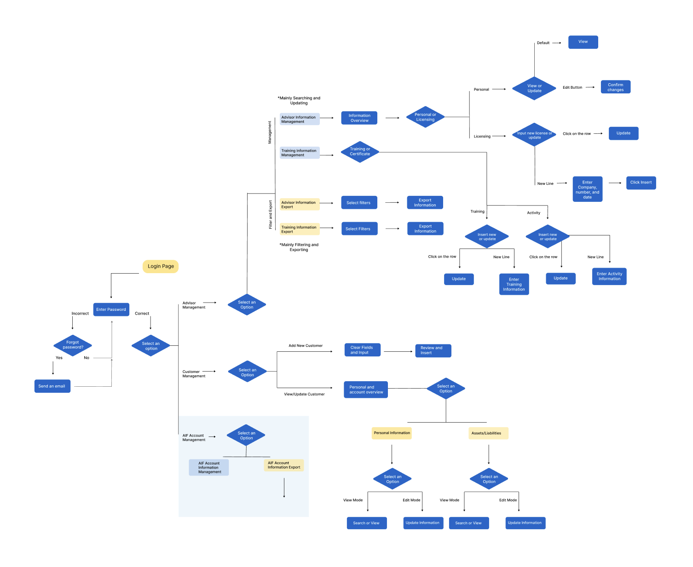
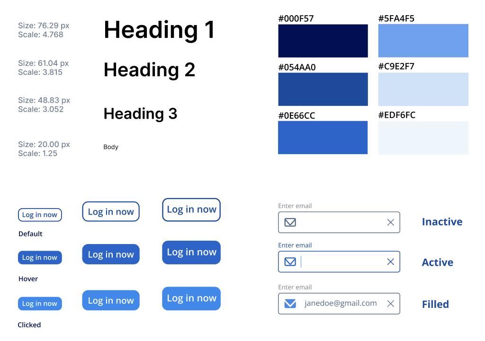
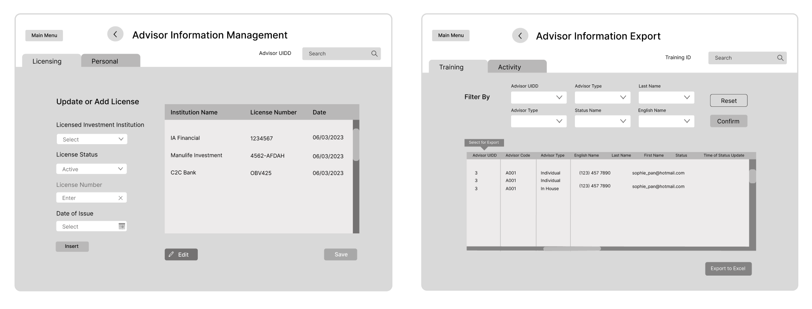
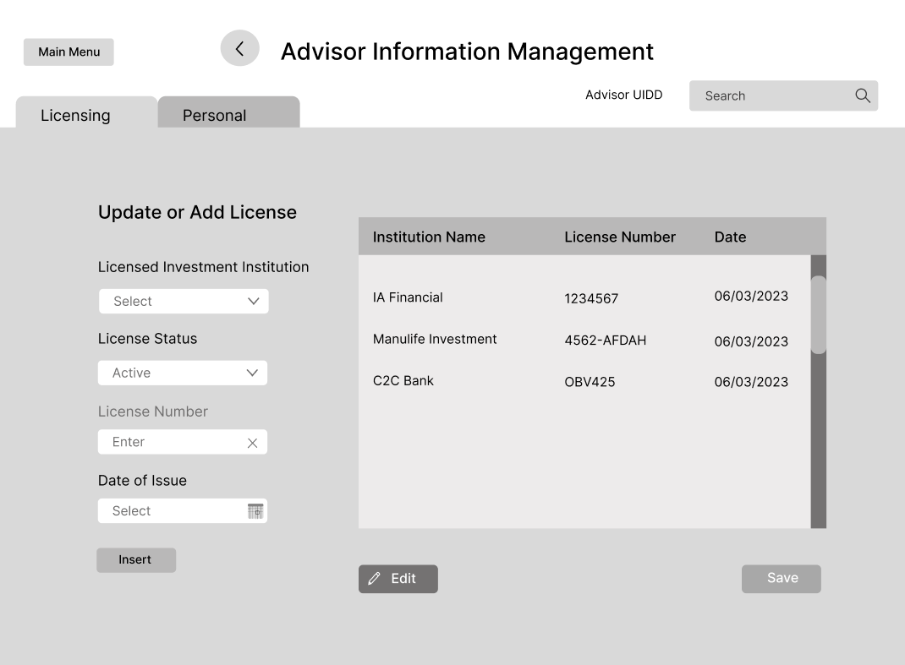
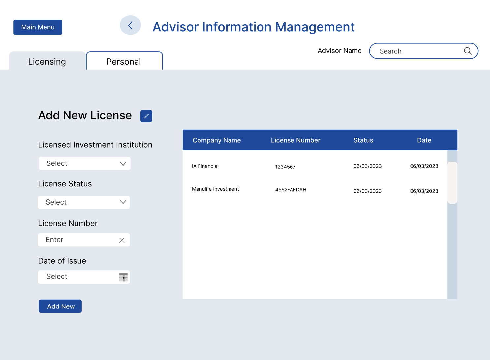

During my internship as a UI/UX intern, I collaborated with developers to implement a new business management system which focused on developing a new user-friendly solution for financial advisors and other employees. I conducted user research, created user flows, wireframed, prototyped and conducted usability testing. Our small team size allowed me to work directly with the product manager and engineers to effectively present our final product to stakeholders and ensure a seamless transition to the new system.
View Final DesignAt the start of my internship, there was no separate system to manage customers information for financial advisors and administrative employees. Using a spreadsheet to track and manage customer information was not efficient and prone to error. To help save time on maintaining the business information, my team began to redefine this process for employees.
It was important to understand the users which meant the employees at the company. I was able to conduct 6 user interviews among the financial advisors and administrative assistants who would be using the system frequently. These are a few of the questions I asked to get an idea of their responsibilities and interactions with their system to understand their role as a user.
I analyzed user pain points and goals from the survey responses to brainstorm features that effectively address frequent and essential tasks.
Easy to navigate search bar, along with filtering system to search by client information
Create an interface that allows advisors to pick which lines of information needs to be exported
Separate interface to filter and view reports to quickly scan for information
I continued to develop user flows by actively communicating with developers and managers, ensuring alignment with specific project goals.
During my internship, I also had to create a design system for the company's future website designs, which was then used for the style guide of this project.
Next, I followed the style guide and created a low fidelity prototype on Figma for testing.
I then had the opportunity to directly recieve feedback for iterations through usability testing with the financial advisors who would be utilizing the final prototype. Getting their perspective was extremely helpful in identifying edge cases and meeting user goals.
Initially the licensing page I wireframed prioritized adding and updating licensing information for advisor tasks.
After multiple rounds of usability testing, new advisors who were learning the interface found it hard to differentiate the adding and editing processes, not knowing where to start at first glance. Along with testing, I discovered Advisors rarely need to update licensing information.
To diverge from this issue, I changed the editing icon to the upper left and renamed the main action button "Add new" to clarify its purpose. Advisors can input new licensing and easily insert, and then continue to edit when necessary through the same fields.
I then led A/B testing with these two versions amongst the employees at the company by testing the task completion time to add and edit licensing information. The second version was preferred by majority of the users as they often need to add new licensing information, rather than editing the existing ones in the chart.
The internship was one of my most valuable experiences as it allowed me to collaborate closely with developers and gain insight into different aspects of the development process. Direct feedback from user testing deepened my understanding and helped refine my designs through continuous iterations.
Collaborating with developers
Working in a small team allowed me to collaborate closely with diverse roles, gaining a deeper understanding of balancing creativity with feasibility in the development process. I learned the importance of prioritizing user experience over extravagant interfaces, recognizing that visually appealing designs might not always suit user or business needs.
Importance of user research
I had the opportunitity to conduct direct user interviews and extensive research before designing with the employees at the company. Getting to witness the benefits of addressing user needs firsthand confirmed the value of understanding their daily use of the interface, motivating me to further develop my design skills.
The bigger picture
As the only UX designer on a large project, I initially focused on the overarching goals and final outcomes, and setting ambitious standards for myself. I've learnt that the design process is equally and if not more, important than the final product. Theres so much value in each step of the design process that translates into quality results.